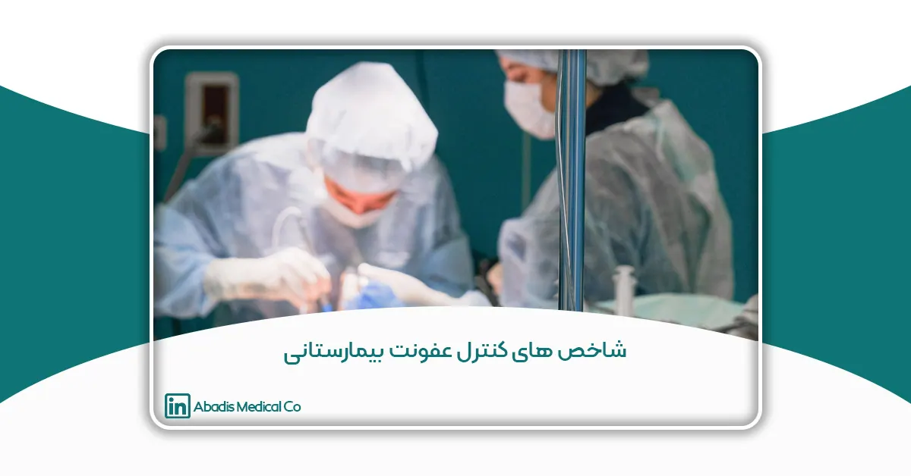

مقدمه
کنترل عفونتهای بیمارستانی یکی از مهمترین چالشهایی است که نظامهای بهداشتی و درمانی در سراسر دنیا با آن مواجه هستند. این عفونتها نه تنها سلامت بیماران را به خطر میاندازند، بلکه باعث افزایش هزینههای درمانی، طولانیتر شدن مدت بستری بیماران و کاهش اعتماد عمومی به بیمارستانها میشوند.
راهکارهای موجود برای مدیریت این چالش چیست؟
استفاده از شاخصهای کنترل عفونت، یکی از مؤثرترین روشها برای پیشگیری و مدیریت این مشکل است. این شاخصها به بیمارستانها و مراکز درمانی کمک میکنند تا کیفیت خدمات بهداشتی را ارتقا دهند، از هزینههای اضافی جلوگیری کنند و رضایت بیماران را افزایش دهند.
در این مقاله، تلاش شده است تا با بررسی شاخصهای کنترل عفونت بیمارستانی و ارائه اطلاعات دقیق، گامی مؤثر در ارتقای کیفیت خدمات درمانی و پیشگیری از عفونتهای بیمارستانی برداشته شود. همچنین نقش تجهیزات پزشکی مانند کیسههای ساکشن یکبار مصرف آبادیس در کاهش عفونتها و اهمیت آنها در بیمارستانهای ایران بررسی خواهد شد.
تعریف و اهمیت شاخصهای کنترل عفونت
تعریف شاخصهای کنترل عفونت
شاخصهای کنترل عفونت، ابزارها و معیارهای علمی هستند که به منظور ارزیابی و سنجش اثربخشی برنامههای پیشگیری و کنترل عفونت در بیمارستانها و مراکز درمانی استفاده میشوند. این شاخصها شامل مجموعهای از اطلاعات کمی و کیفی هستند که جنبههای مختلف مدیریت عفونت، از جمله رعایت اصول بهداشت، نظارت بر روند ضدعفونی تجهیزات، و اجرای پروتکلهای استاندارد را مورد بررسی قرار میدهند.
به بیان سادهتر، شاخصهای کنترل عفونت به بیمارستانها این امکان را میدهند که با جمعآوری دادههای دقیق و قابل اعتماد، عملکرد خود را پایش کرده و نقاط ضعف و قوت برنامههای خود را شناسایی کنند. این شاخصها هم در سطح ملی و هم در سطح بیمارستانی قابل استفاده هستند و نقش کلیدی در ارتقای سلامت عمومی ایفا میکنند.
اهمیت شاخصهای کنترل عفونت
عفونتهای بیمارستانی بهعنوان یکی از معضلات جدی نظامهای بهداشتی و درمانی شناخته میشوند. این عفونتها که در اثر عدم رعایت اصول بهداشتی یا تماس با تجهیزات آلوده به وجود میآیند، میتوانند عوارض جبرانناپذیری برای بیماران و هزینههای زیادی برای بیمارستانها به همراه داشته باشند. شاخصهای کنترل عفونت از جنبههای زیر حائز اهمیت هستند:
- ارتقای کیفیت خدمات درمانی
با استفاده از شاخصهای کنترل عفونت، بیمارستانها میتوانند نقاط ضعف موجود در فرآیندهای درمانی و بهداشتی را شناسایی کرده و آنها را بهبود دهند. این شاخصها به مدیریت بیمارستان کمک میکنند تا استانداردهای کیفی را بر اساس دادههای علمی ارتقا بخشند. - کاهش بروز عفونتهای بیمارستانی
یکی از اصلیترین اهداف شاخصهای کنترل عفونت، پیشگیری از بروز عفونتهای بیمارستانی است. این شاخصها به تیمهای درمانی کمک میکنند تا با اجرای برنامههای دقیق و هدفمند، عفونتها را به حداقل برسانند و سلامت بیماران را تضمین کنند. - مدیریت بهینه هزینهها
عفونتهای بیمارستانی علاوه بر آسیبهای جسمی و روحی برای بیماران، هزینههای مالی سنگینی نیز بر دوش بیمارستانها و بیماران میگذارند. این هزینهها شامل درمانهای اضافی، مدت بستری طولانیتر و استفاده از تجهیزات گرانقیمت میشود. اجرای صحیح شاخصهای کنترل عفونت میتواند به کاهش این هزینهها کمک کند. - پایش مداوم عملکرد بیمارستانها
شاخصهای کنترل عفونت ابزارهایی هستند که امکان ارزیابی و پایش مداوم عملکرد بیمارستانها را فراهم میکنند. این پایش مداوم به مدیران کمک میکند تا روند پیشرفت یا کاستیهای موجود را شناسایی کرده و اقدامات لازم را در جهت بهبود انجام دهند. - تقویت اعتماد عمومی و حرفهای
بیمارستانهایی که به شاخصهای کنترل عفونت توجه ویژه دارند و عملکرد خود را به طور مستمر بهبود میبخشند، اعتماد بیشتری از سوی بیماران، خانوادههای آنها و حتی جامعه پزشکی جلب میکنند. این امر میتواند به افزایش تعداد مراجعین و بهبود جایگاه بیمارستان در سطح ملی و منطقهای منجر شود. - حمایت از کادر درمان و کارکنان بیمارستان
عفونتهای بیمارستانی تنها بیماران را تحت تأثیر قرار نمیدهند؛ بلکه کادر درمان نیز در معرض خطر ابتلا به این عفونتها هستند. شاخصهای کنترل عفونت به حفاظت از سلامت کارکنان بیمارستان و کاهش خطر انتقال عفونت به آنها کمک میکنند.
چالشها در اجرای شاخصهای کنترل عفونت
با وجود اهمیت بالای شاخصهای کنترل عفونت، اجرای آنها با چالشهایی همراه است. برخی از این چالشها عبارتند از:
- کمبود منابع انسانی و مالی: اجرای برنامههای پیشگیری و پایش مداوم نیازمند سرمایهگذاری قابل توجهی است.
- عدم آگاهی کافی: نبود آموزشهای مناسب برای کادر درمان و مدیران بیمارستانی میتواند باعث کاهش اثربخشی این شاخصها شود.
- پیچیدگی دادهها: جمعآوری، تجزیه و تحلیل دادهها بهویژه در بیمارستانهای بزرگ، نیازمند فناوریهای پیشرفته و تخصص بالا است.
شاخصهای کنترل عفونت به عنوان ابزاری کلیدی برای بهبود کیفیت خدمات درمانی و کاهش هزینهها در بیمارستانها شناخته میشوند. این شاخصها علاوه بر پیشگیری از عفونتهای بیمارستانی، نقشی حیاتی در ارتقای سلامت عمومی و افزایش اعتماد جامعه به نظامهای بهداشتی دارند. در بخش بعدی، انواع شاخصهای کنترل عفونت و کاربردهای آنها را بررسی خواهیم کرد.
شاخصهای اصلی کنترل عفونت شامل موارد زیر هستند:
- نسبت وقوع عفونتهای بیمارستانی (HAI Rate):
این شاخص درصد وقوع عفونتهای بیمارستانی را نسبت به تعداد کل بیماران بستری یا تعداد روزهای بستری اندازهگیری میکند. - نسبت رعایت بهداشت دستها (Hand Hygiene Compliance):
این شاخص نشاندهنده درصد رعایت بهداشت دست توسط کادر درمانی در مراحل مختلف مراقبت از بیمار است. - شاخص مصرف آنتیبیوتیک (Antibiotic Usage):
این شاخص میزان استفاده از آنتیبیوتیکها را بررسی میکند تا مصرف بیرویه یا نادرست آنها شناسایی و کنترل شود. - میزان رعایت استریلیزاسیون تجهیزات (Sterilization Compliance):
درصد تجهیزاتی که به طور صحیح استریل شدهاند و آماده استفاده برای بیماران هستند. - شاخص نظافت محیطی (Environmental Cleaning):
کیفیت و میزان اثربخشی نظافت محیط بیمارستانی، شامل بخشهای عمومی، اتاقهای عمل و بخش مراقبتهای ویژه. - شاخص عفونت محل جراحی (Surgical Site Infection Rate):
درصد بیمارانی که پس از عمل جراحی دچار عفونت شدهاند. این شاخص یکی از مهمترین معیارها برای ارزیابی کیفیت کنترل عفونت در اتاق عمل است. - میزان ایزولاسیون بیماران مبتلا به عفونتهای خاص (Patient Isolation Compliance):
درصد بیمارانی که به طور مناسب در اتاقهای ایزوله بستری شدهاند تا از انتشار عفونت جلوگیری شود. - شاخص واکسیناسیون کادر درمانی (Staff Vaccination Coverage):
میزان واکسیناسیون پرسنل بیمارستان در برابر بیماریهای قابل انتقال مانند آنفلوآنزا و هپاتیت. - میزان بروز عفونت ناشی از کاتتر یا ونتیلاتور (Device-Associated Infection Rates):
بررسی نرخ عفونتهای مرتبط با کاتترهای وریدی، ادراری یا دستگاههای تنفسی در بیماران بستری. - شاخص پایبندی به پروتکلهای استاندارد (Protocol Adherence):
درصد پایبندی کادر درمانی به پروتکلهای استاندارد پیشگیری از عفونت، مانند استفاده از تجهیزات حفاظت شخصی (PPE).
انواع شاخصهای کنترل عفونت بیمارستانی
در سیستمهای بهداشت و درمان، بهویژه در بیمارستانها، پیشگیری و کنترل عفونتها امری حیاتی است. استفاده از شاخصها و معیارهای مشخص میتواند به بیمارستانها کمک کند تا میزان اثربخشی برنامههای کنترل عفونت خود را ارزیابی و بهبود دهند. این شاخصها میتوانند به سه دسته عمده تقسیم شوند: شاخصهای ساختاری، فرآیندی و نتیجهای.
شاخصهای ساختاری (Structural Indicators)
شاخصهای ساختاری به زیرساختها و منابع فیزیکی و سازمانی بیمارستان مربوط میشوند که شرایط لازم برای پیشگیری از عفونتها را فراهم میآورند. این شاخصها بر اساس منابع و تجهیزات بیمارستانی بررسی میشوند و در واقع پایهگذار اقدامات پیشگیرانه موثر در کنترل عفونتها هستند.
- تجهیزات و ابزار مناسب: داشتن تجهیزات بهداشتی و پزشکی استاندارد و در دسترس یکی از مهمترین عوامل در کنترل عفونت است. این تجهیزات شامل کیسههای ساکشن یکبار مصرف، دستگاههای ضدعفونیکننده، تجهیزات حفاظتی برای پرسنل (مانند ماسک، دستکش و گانهای استریل) و نیز تجهیزات پزشکی استریل میشوند. بیمارستانها باید اطمینان حاصل کنند که این تجهیزات بهطور مرتب و دقیق مورد استفاده قرار میگیرند.
- آموزش و آگاهی پرسنل: بهمنظور پیشگیری از عفونتها، پرسنل پزشکی باید آموزشهای مداوم و مؤثری دریافت کنند. این آموزشها باید شامل نحوه استفاده از تجهیزات بهداشتی، رعایت اصول بهداشت فردی، و استانداردهای ضدعفونی کردن و کنترل عفونت باشد. عدم آموزش صحیح میتواند منجر به بروز خطاهایی در اجرای پروتکلهای بهداشتی شود.
- شرایط فیزیکی بیمارستان: بیمارستانها باید محیطی بهداشتی و استاندارد داشته باشند. این شامل تهویه مناسب، نورپردازی کافی، تمیزی محیط، و رعایت استانداردهای بهداشتی در بخشهای مختلف بیمارستان است. همچنین، استفاده از مواد ضدعفونیکننده مؤثر در سطح بیمارستان (کف، دیوارها، و سطوح مختلف) و مدیریت صحیح زبالههای پزشکی و عفونی اهمیت زیادی دارد.
- پشتیبانی مدیریت و سیاستهای بیمارستان: بخش مدیریت بیمارستان نیز باید سیاستهای واضح و مؤثری برای کنترل عفونتها تعیین کرده و آنها را بهطور مداوم به روز نگه دارد. این سیاستها باید به پرسنل اطمینان دهند که کنترل عفونتها در اولویت است و منابع و پشتیبانی کافی برای اجرای این سیاستها وجود دارد.
شاخصهای فرآیندی (Process Indicators)
شاخصهای فرآیندی به ارزیابی و نظارت بر روشها و پروتکلهای اجرایی بیمارستان برای پیشگیری و کنترل عفونتها میپردازند. این شاخصها مربوط به اقدامات روزمره و فرآیندهایی هستند که پرسنل باید آنها را بهدقت دنبال کنند تا از گسترش عفونتها جلوگیری شود.
- شستشوی دستها: یکی از مهمترین و اساسیترین اقدامات پیشگیرانه در کنترل عفونت، شستشوی صحیح دستها است. مطالعات نشان دادهاند که بیشتر عفونتهای بیمارستانی از طریق تماس دستها منتقل میشوند. بنابراین، نظارت مستمر بر نحوه و میزان رعایت پروتکلهای شستشوی دستها توسط کادر پزشکی، پرستاران، و حتی بازدیدکنندگان، از اهمیت بالایی برخوردار است.
- استفاده از تجهیزات محافظتی شخصی: پرسنل پزشکی و دیگر کارکنان بیمارستان باید همیشه از تجهیزات حفاظتی مناسب مانند دستکشهای استریل، ماسکها، گانهای استریل و شیلد صورت استفاده کنند. نظارت بر استفاده صحیح این تجهیزات و تغییر آنها بهطور مرتب نیز از جمله شاخصهای فرآیندی است.
- استفاده و نگهداری تجهیزات پزشکی: بررسی نحوه استفاده و نگهداری تجهیزات پزشکی بهویژه آنهایی که با بیماران در ارتباط مستقیم هستند، از اهمیت ویژهای برخوردار است. استفاده صحیح از دستگاههای پزشکی و رعایت استانداردهای ضدعفونی در مورد آنها میتواند از انتقال عفونتها جلوگیری کند.
- مدیریت زبالهها و مواد آلوده: بیمارستانها باید روشهای دقیقی برای جمعآوری، دستهبندی و دفع زبالههای پزشکی و آلوده اتخاذ کنند. این زبالهها باید بهطور ویژه و در شرایط استاندارد از محیطهای بیمارستانی خارج شوند تا از آلودگیهای بیشتر جلوگیری شود.
شاخصهای نتیجهای (Outcome Indicators)
شاخصهای نتیجهای به ارزیابی تأثیر اقدامات کنترلی بر وضعیت سلامت بیماران و کاهش میزان عفونتها در بیمارستانها مربوط میشوند. این شاخصها، نتایج ملموسی از تلاشهای انجامشده در زمینه کنترل عفونتها را ارائه میدهند.
- کاهش میزان عفونتها: اصلیترین شاخص نتیجهای که بیمارستانها باید به آن توجه کنند، میزان کاهش عفونتهای بیمارستانی است. بررسی و مقایسه نرخ بروز عفونتها قبل و بعد از اجرای برنامههای کنترل عفونت، میتواند بهطور مؤثر میزان اثربخشی این برنامهها را نشان دهد.
- بستری شدن مجدد بیماران: بسیاری از بیمارانی که بهدلیل عفونتهای بیمارستانی درمان میشوند، ممکن است بعد از ترخیص، بهدلیل مشکلات عفونی دوباره بستری شوند. این موضوع میتواند نشاندهنده ناکارآمدی برنامههای پیشگیری از عفونت باشد.
- طول مدت بستری بیمار: کاهش طول مدت بستری بیماران بهویژه بیمارانی که به عفونتهای بیمارستانی مبتلا شدهاند، میتواند نشاندهنده کارایی برنامههای کنترل عفونت و بهبود کیفیت مراقبتهای بهداشتی باشد.
- شاخصهای ریکاوری و مرگومیر: ارزیابی میزان بهبود بیماران و مرگومیر ناشی از عفونتهای بیمارستانی از دیگر شاخصهای مهم است. کاهش مرگومیر ناشی از عفونتهای بیمارستانی نشاندهنده اثربخشی استراتژیهای کنترل عفونت است.
معرفی شاخصهای مهم در ایران
در ایران، کنترل عفونتهای بیمارستانی یکی از اولویتهای اصلی در سیستم بهداشت و درمان است. وزارت بهداشت، درمان و آموزش پزشکی کشور و دیگر سازمانهای مرتبط، برای نظارت بر اجرای پروتکلهای بهداشتی و پیشگیری از عفونتها، شاخصهای مشخصی تعریف کردهاند. این شاخصها به بیمارستانها کمک میکند تا اثربخشی اقدامات خود را ارزیابی کنند و از بروز عفونتها جلوگیری نمایند. در این بخش به معرفی مهمترین شاخصهای کنترل عفونت در ایران میپردازیم و در صورت امکان آنها را با شاخصهای بینالمللی مقایسه خواهیم کرد.
شاخصهای تعریفشده توسط وزارت بهداشت ایران
وزارت بهداشت ایران برای نظارت بر وضعیت بهداشتی و پیشگیری از عفونتها در بیمارستانها و مراکز درمانی، مجموعهای از شاخصها را تعیین کرده است. این شاخصها معمولاً شامل ارزیابی فرآیندها، نتایج و ساختارهای بهداشتی هستند. برخی از مهمترین این شاخصها عبارتند از:
- شاخص آلودگی دستها: وزارت بهداشت ایران برای بررسی میزان رعایت شستشوی دستها توسط کارکنان بیمارستان، شاخصهای مشخصی تعریف کرده است. این شاخصها معمولاً شامل اندازهگیری میزان شستشوی دستها پیش و پس از انجام اقدامات درمانی و پزشکی است.
- نرخ بروز عفونتهای بیمارستانی: یکی از مهمترین شاخصها در کنترل عفونتهای بیمارستانی، اندازهگیری میزان بروز این عفونتها در طول مدت بستری بیماران است. وزارت بهداشت ایران نظارت دقیقی بر این شاخصها دارد و بیمارستانها موظف به گزارش دهی در این زمینه هستند.
- شاخص ایمنی تزریقات: نظارت بر ایمنی و بهداشت تزریقات در بیمارستانها یکی دیگر از شاخصهای مهم است. وزارت بهداشت ایران استانداردهایی برای انجام تزریقات بهطور بهداشتی تعیین کرده است.
- رعایت اصول ضدعفونی تجهیزات پزشکی: نظارت بر رعایت اصول ضدعفونی تجهیزات پزشکی بهویژه در بخشهای جراحی و مراقبتهای ویژه، یکی از شاخصهای دیگر است. وزارت بهداشت ایران بهطور مستمر بیمارستانها را برای استفاده از مواد ضدعفونیکننده معتبر و تجهیزات استاندارد مورد ارزیابی قرار میدهد.
مقایسه با شاخصهای بینالمللی
اگرچه ایران در زمینه کنترل عفونتها پیشرفتهای قابل توجهی داشته است، اما برخی از شاخصهای بینالمللی نیز وجود دارند که به عنوان مرجع برای بیمارستانها و مراکز درمانی در سرتاسر جهان شناخته میشوند. در ادامه به مقایسه این شاخصها خواهیم پرداخت:
- شاخص شستشوی دستها: در سطح جهانی، سازمان بهداشت جهانی (WHO) برنامههای گستردهای برای تشویق به شستشوی دستها دارد. طبق گزارشات WHO، میزان رعایت شستشوی دستها در مراکز درمانی کشورهای مختلف در حال افزایش است، اما در برخی کشورها همچنان با مشکلاتی مواجه هستند. ایران نیز با تلاشهای مداوم در این زمینه، بهبودهای چشمگیری داشته است.
- نرخ عفونتهای بیمارستانی: طبق گزارشهای بینالمللی، کشورهای مختلف با چالشهای متفاوتی در زمینه کاهش عفونتهای بیمارستانی مواجه هستند. برای مثال، در برخی کشورهای توسعهیافته، مانند کشورهای اروپایی و آمریکا، نرخ عفونتهای بیمارستانی بهطور قابل توجهی کاهش یافته است، در حالی که در کشورهای در حال توسعه، این نرخها هنوز بالاتر است. با این حال، ایران توانسته است با استفاده از شاخصهای تعریفشده، نرخ عفونتهای بیمارستانی را بهطور چشمگیری کاهش دهد.
- آمار استفاده از تجهیزات محافظتی: در سطح جهانی، سازمانهای بهداشتی برای استفاده از تجهیزات محافظتی مانند دستکشها، ماسکها و گانها، پروتکلهای سختگیرانهای تعیین کردهاند. ایران نیز در سالهای اخیر بهویژه پس از پاندمی کرونا، برنامههای آموزشی و پروتکلهای خود را در این زمینه تقویت کرده است.
- کنترل آلودگیهای محیطی: در سطح جهانی، کشورهای مختلف برای کاهش آلودگیهای محیطی بیمارستانها، به استانداردهای مختلفی دست یافتهاند. در ایران نیز بیمارستانها موظف به رعایت استانداردهای بهداشتی برای تمیزی و ضدعفونی محیط هستند، اما همچنان در برخی موارد تفاوتهایی در رعایت این استانداردها بین بیمارستانها وجود دارد.
در حالی که ایران بهطور جدی در زمینه کنترل عفونتها تلاش کرده و شاخصهای دقیقی برای نظارت بر این اقدامات در بیمارستانها تعریف کرده است، مقایسه این شاخصها با استانداردهای بینالمللی نشان میدهد که همچنان در برخی زمینهها بهبودهایی نیاز است. با این حال، اقدامات وزارت بهداشت ایران در جهت بهبود وضعیت بهداشتی بیمارستانها و کاهش عفونتها قابل تحسین است و میتواند بهعنوان الگویی برای کشورهای دیگر در حال توسعه باشد.
نتیجهگیری
کنترل عفونت بیمارستانی بهعنوان یکی از چالشهای اصلی نظام سلامت، تأثیرات گستردهای بر سلامت بیماران، عملکرد بیمارستانها و هزینههای درمانی دارد. این مقاله به بررسی شاخصهای کنترل عفونت و نقش آنها در کاهش عفونتهای بیمارستانی، افزایش رضایت بیماران، و بهبود کیفیت خدمات پزشکی پرداخته است.
شاخصهای ساختاری، فرآیندی، و نتیجهای بهعنوان ابزارهایی کلیدی معرفی شدند که بیمارستانها با استفاده از آنها میتوانند بر نقاط ضعف خود نظارت داشته باشند و عملکردشان را بهبود بخشند. همچنین، تجهیزات پزشکی استاندارد و نوآورانه، بهویژه کیسههای ساکشن یکبار مصرف شرکت دانشبنیان آبادیس، نقش مؤثری در کاهش انتقال عفونتها و ارتقای بهداشت بیمارستانی دارند.
اجرای شاخصهای کنترل عفونت همراه با پایش مداوم، استفاده از تجهیزات مدرن، و فرهنگسازی در بیمارستانها میتواند به کاهش مرگومیر و عوارض ناشی از عفونتها منجر شود. علاوه بر این، اعتماد بیماران به بیمارستانها افزایش یافته و تصویر بیمارستان در جامعه بهبود خواهد یافت.
با تمرکز بر این راهکارها، بیمارستانها میتوانند گامهای مؤثری در کاهش عفونتها و افزایش کیفیت خدمات خود بردارند، ضمن اینکه هزینههای درمانی را کاهش داده و تأثیر مثبتی بر سلامت جامعه بگذارند. این اقدامات نشاندهنده اهمیت استراتژیک کنترل عفونت در ارتقای سطح کیفی نظام سلامت کشور است.